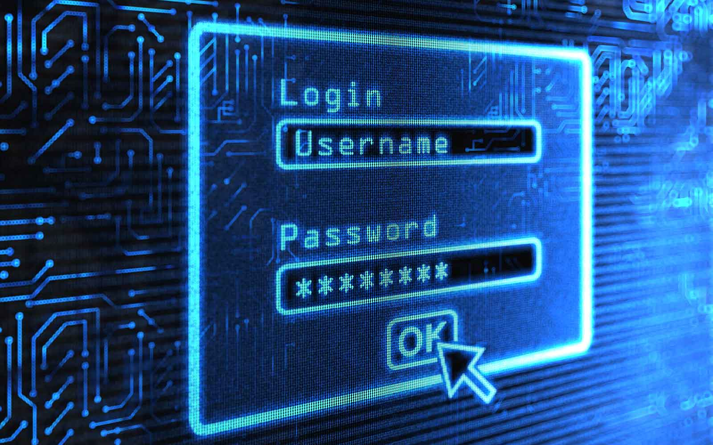

CyberSafe Hub Newsletter
Your Guide to a Safer Digital World
October 2026 | Cybersecurity Awareness Edition
CyberSafe Special Report
Stay Informed. Stay Protected. Stay Secure.1. Recognizing and Preventing Phishing Attacks
By Emmanuel Garcon | October 2026

Phishing is a common cyberattack in which criminals use deceptive emails, text messages, and websites to obtain confidential information. These messages may imitate legitimate organizations and pressure recipients into clicking harmful links or providing passwords. Learning to identify suspicious communication is an important step toward protecting personal and professional information.
Before responding to an unexpected message, carefully examine the sender's address and verify the destination of any link. Be cautious of urgent requests for account details, financial information, or immediate payment. When a message appears suspicious, contact the organization through its official website instead of using the supplied link.
2. Build Stronger Password Security
By Emmanuel Garcon | October 2026
Password security is essential for protecting online accounts, academic records, and financial information. Reusing passwords creates unnecessary risks because a compromised password may allow criminals to access multiple accounts. Instead, use a unique password for each important service and avoid easily guessed personal information.
A reputable password manager can generate and store complex passwords securely. Multi-factor authentication (MFA) provides additional protection by requiring another verification method beyond a password. Combining these practices makes unauthorized access more difficult and strengthens an individual's overall cybersecurity.
3. Keep Your Devices and Information Protected
By Emmanuel Garcon | October 2026
Cybersecurity involves more than choosing a strong password. Outdated software, unsafe downloads, and unsecured wireless networks can expose devices to malware and other threats. Installing software updates promptly helps correct known vulnerabilities, while reliable security tools can help identify suspicious activity.
Regularly back up important documents and store copies in a secure location. Avoid downloading files from unfamiliar websites, and review the privacy settings of applications and online accounts. These practical habits help reduce avoidable risks and support a more secure digital environment at home, at school, and at work.
4. Cybersecurity Safety Checklist
Follow these important steps to improve your online safety:
- Use strong, unique passwords for your accounts.
- Enable multi-factor authentication (MFA).
- Think carefully before clicking links or attachments.
- Install software and security updates promptly.
- Back up important files regularly.
- Avoid downloading files from unfamiliar websites.
Quick Security Tip
Pause before you click. Unexpected links and attachments can expose your device or personal information to cybercriminals. Verify suspicious messages independently, enable MFA, and keep your software updated.
Continue Learning
Cybersecurity knowledge develops through regular learning and responsible technology use. For additional guidance on phishing, secure accounts, and protecting devices, visit the Cybersecurity and Infrastructure Security Agency (CISA) . Its educational resources can help individuals recognize digital threats and make informed security decisions.
Knowledge is your first line of defense.
Stay informed, protect your information, and help create
a safer digital world.
— The CyberSafe Hub Team